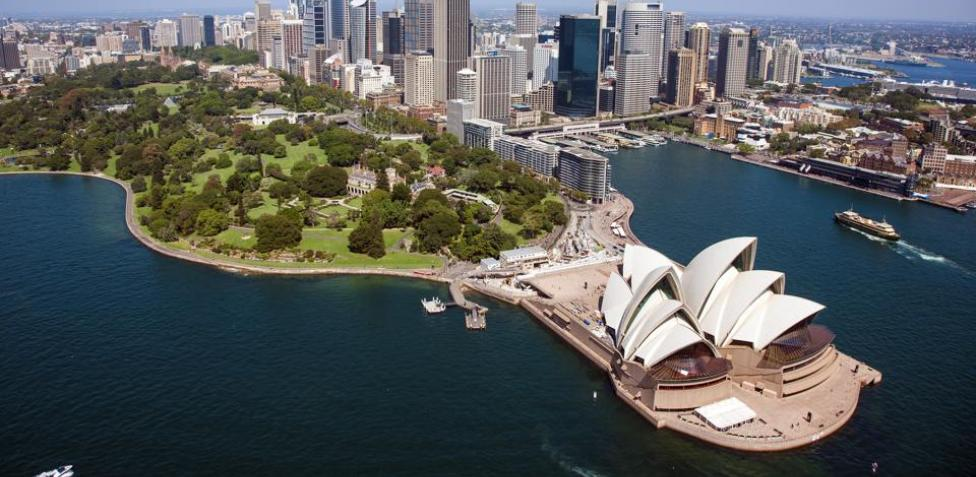

Aventuras Acuáticas
Explorando los Océanos

Sumérgete en las aguas cristalinas de Oceanía y descubre la increíble vida marina que habita en sus arrecifes de coral. Desde el buceo en la Gran Barrera de Coral hasta el avistamiento de ballenas en las islas del Pacífico, las aventuras acuáticas son infinitas.
Explora la belleza submarina y participa en actividades como snorkel, kayak y paseos en bote para experimentar la diversidad del océano Pacífico.
Festivales Culturales
Celebraciones Coloridas
Sumérgete en la vibrante atmósfera de los festivales culturales de Oceanía. Desde la danza del fuego en Samoa hasta el festival de la linterna en China, estas celebraciones ofrecen una visión única de las tradiciones y la alegría de las comunidades locales.
Descubre la artesanía, la música y las danzas tradicionales que forman parte integral de estos festivales.